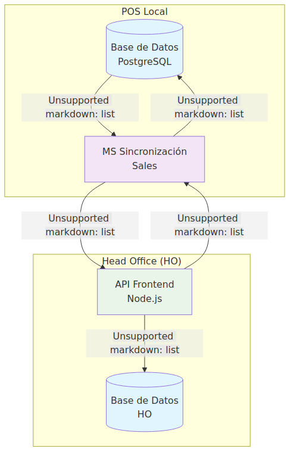
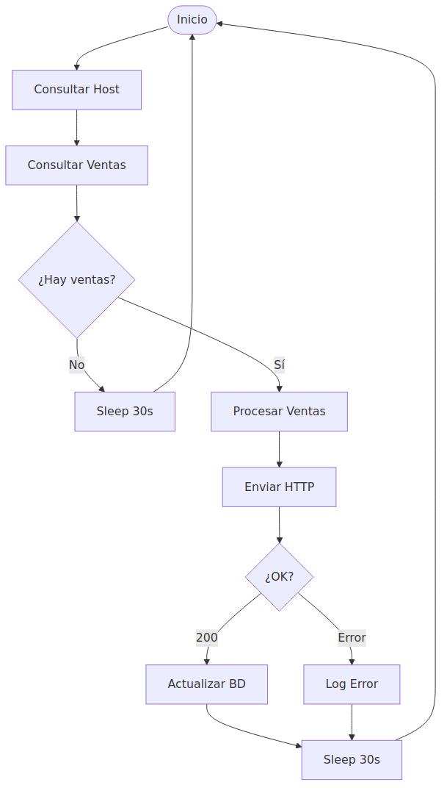
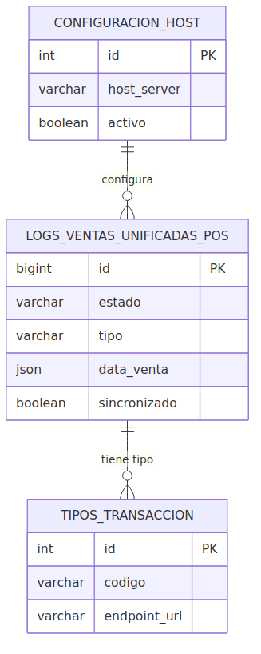

Situación: El microservicio está operativo al 70% procesando ventas entre POS y Head Office, pero presenta riesgos críticos que comprometen la estabilidad y escalabilidad del sistema.
Capacidad Actual: Procesa 52 ventas/hora con disponibilidad del 99.2%, pero la tasa de error del 5.2% indica problemas estructurales que requieren atención inmediata.
Impacto: Sistema funcional pero con limitaciones severas que impiden el crecimiento más allá de 500 estaciones de servicio.
Vista general de la arquitectura implementada y flujo de datos entre componentes.

Secuencia de operaciones que ejecuta el microservicio para sincronizar ventas.

| Campo | Valor Actual |
|---|---|
| Repositorio Principal | https://periferiaitgrouptfs.visualstudio.com/TERPEL/_git/terpel_dev |
| Repositorio Espejo | https://github.com/giovanemere/terpel_pos_dev |
| Tecnología | NestJS + TypeScript + PostgreSQL |
| Estado | 70% completado, funcional pero inestable |
Tablas principales utilizadas:
| Problema | Probabilidad | Impacto | Consecuencia |
|---|---|---|---|
| Stack Overflow | Alta | Crítico | Caída completa del sistema |
| Memory Leak | Media | Alto | Degradación progresiva |
| Pérdida de Datos | Media | Crítico | Inconsistencias financieras |
| Baja Performance | Alta | Medio | Colas de ventas pendientes |
Estructura de tablas y relaciones implementadas en el sistema.

| Métrica | Valor Actual | Limitación | Causa |
|---|---|---|---|
| Ventas por hora | 52 | Procesamiento secuencial | Loop for() sin paralelización |
| Tiempo de respuesta | 2.3 segundos | Queries no optimizadas | Sin índices en campo sincronizado |
| Disponibilidad | 99.2% | Reintentos infinitos | Recursión sin límite |
| Tasa de error | 5.2% | Sin manejo específico | Catch genérico para todos los errores |
| Estaciones | Ventas/día | Estado Actual | Observaciones |
|---|---|---|---|
| 100 | 10,000 | ✅ Manejable | Funcionamiento actual |
| 500 | 50,000 | ⚠️ Límite crítico | Riesgo de saturación |
| 1000 | 100,000 | ❌ Imposible | Sistema colapsaría |
Funcionalidad: El sistema cumple su propósito básico de sincronizar ventas entre POS y HO, procesando los tres tipos de venta (combustible, canastilla, kiosco) con una arquitectura NestJS sólida.
Limitaciones Críticas: La recursión infinita y el procesamiento secuencial representan riesgos inaceptables para un sistema de producción que maneja transacciones financieras.
Capacidad Actual: Limitado a ~500 estaciones máximo antes de colapsar. El LIMIT 5 hardcodeado y la falta de paralelización impiden el crecimiento.
Recomendación Inmediata: El sistema requiere estabilización urgente antes de cualquier expansión. Los riesgos identificados pueden causar pérdida de datos financieros y caídas completas del servicio.